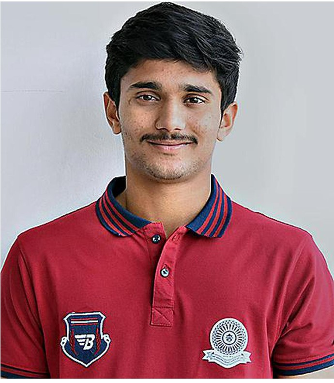

Kaki Nitish Kumar Reddy
Kaki Nitish Kumar Reddy

FULL NAME: Kaki Nitish Kumar Reddy
BORN: May 26, 2003, Visakhapatnam, Andhra Pradesh
AGE: 21y 12d
BATTING STYLE: Right hand Bat
BOWLING STYLE: Right arm Medium fast
PLAYING ROLE: Batting Allrounder
SUMMARY
Nitish Kumar Reddy first made headlines when he started the 2017-18 Vijay Merchant Trophy with a triple-century for Andhra, followed by a 345-ball 441 against Nagaland. His 1237 runs there at an average of 176.41 still remains the record highest tally in the tournament's history, and earned him the BCCI's award for best U-16 cricketer that season. As he developed his bowling as a seamer, he also took the new ball for Andhra in senior domestic cricket, and his all-round skills earned the interest of Sunrisers Hyderabad in the IPL. Before the 2023 IPL season, he was bought by SRH for INR 20 lakhs, but in his debut season, bowled five wicketless overs across two games while not getting to bat. However, in IPL 2024, his exploits earned SRH crucial victories in their run to the playoffs; his 64 against Punjab Kings helped SRH win by one run, while his unbeaten 76 against Delhi Capitals ensured a two-run win. Sreshth ShahSignature